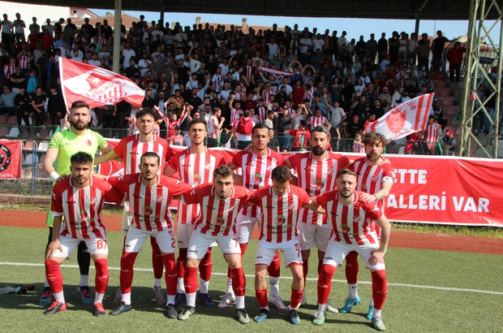

| Anasayfa | İlçeler | Köyler | Bilecikspor | Tarihçe | Gezilecek Yerler |
|  |
BileciksporBilecikspor, Bilecik ilinin eski profesyonel futbol kulüplerinden biridir. Renkleri "Kırmızı-Beyaz"dır ve 1969 yılında kurulmuştur.[1] Kulüp Başkanı Ali Muyşin'dir. Takım maçlarını 5150 koltuk kapasiteli Şeyh Edebali Stadyumu'nda oynamaktadır. Bilecikspor futbol takımı 2014-2015 sezonu itibarıyla Bilecik 1. Amatör Küme'de mücadele etmektedir. Tarihi1969 yılında Bilecik Gençlik ve Hisar Gençlikspor kulüplerinin birleşmesi ile kurulmuştur.[1] 1982 yılına kadar geçen süreçte mahalli ve bölgesel amatör liglerde mücadele ederken, 1982-1983 sezonunda o zamanki adıyla "2. Lig'e Katılma Ligi"nde mücadele etmiş fakat 2. Lig'e çıkamamıştır. Bilecikspor, 1984 yılında kurulan 3. Lig'e yükselmek için oynanan terfi maçlarında başarılı olarak 3. Lig'e yükselmiş ve profesyonel futbol takımı olmuştur. 1987 yılında tekrar amatör kümeye düşmesinin ardından ertesi sene tekrar 3. Lig'e yükselmiştir. 1989 - 1990 sezonu hariç hep 3. Lig'de oynayan kulüp, 2007-2008 sezonunda 3. Lig 4. Grupta 16. olarak amatör kümeye düşmüştür. 2008-2009 sezonunu Bilecik 1. Amatör Küme'de namağlup 2. tamamlayan Bilecikspor, 2009-2010 sezonunda Bilecik 1. Amatör Küme ve Bilecik 2. Amatör Küme'ye takım çıkaramamıştır.[2] 2010-2011 sezonunda eski futbolcusu İsmail Cinoğlu'nun teknik direktörlüğünde ve Ali Han başkanlığında sahalara dönmüş ve Bilecik 2. Amatör Küme'de sezonu 4. bitirmiştir. Bilecikspor, 2011-2012 ve 2012-2013 sezonlarında da Bilecik 2. Amatör Küme Bilecik Grubunda mücadele etmiş; fakat bir üst kümeye çıkamamıştır. 2013-2014 sezonuna, Ankaralı iş insanı Batuhan Çolak'ın kulübün borçlarını ödeyip yönetimini devralmasıyla birlikte yeni transferlerle ve yeni teknik direktör Engin Özmen yönetiminde giren Bilecikspor, Bilecik 2. Amatör Küme'de bitime 2 hafta kala şampiyonluğunu ilan etmiştir.[3] Bilecik 1. Amatör Küme'de 2014-2015 sezonunun başında Batuhan Çolak'ın istifa etmesi üzerine, kulübün eski futbolcusu ve teknik direktörü İsmail Cinoğlu yönetimi devralıp takımın küme düşmesini engellemiş ve Bilecikspor'u yeniden sahaya çıkarmıştır.[4] |
|
Yiğit Kocaçoban tarafından yapılmıştır. |